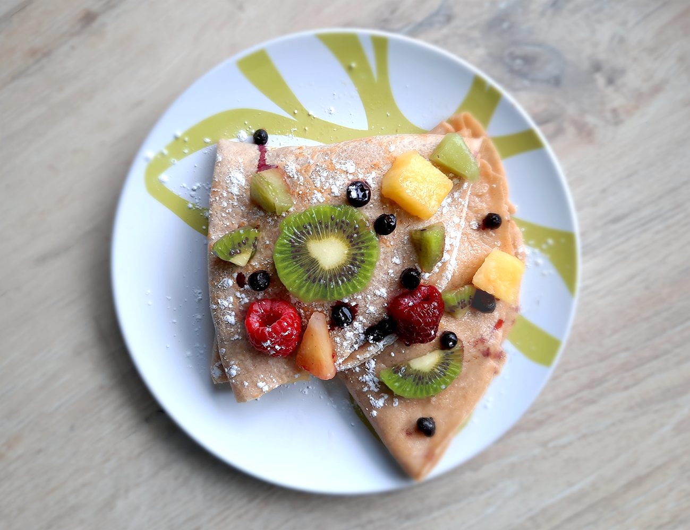

ananas beignets

finse witte kool rolletjes

kip in de hoed

chocolade cheesecake

engelse trifle

schotse cranachan

roze ontbijtbowl

salade met gegrilde ananas

blauwe taart

thaise noedels (pad thai)

thaise zoetzure curry
crêpe met fruit
Je kan dit gerecht zowel als ontbijt, lunch als dessert gebruiken. Voor deze crêpe heb ik een oude pure chocoladeletter gebruikt. Van dit beslag maak je ongeveer 4 crêpes.

Bereidingsduur: 25 minuten
Aantal personen: 2
Ingrediënten:
100 gram bloem
2 eieren
200 milliliter melk
3 kiwi's
1 reep pure chocola
20 frambozen
20 blauwe bessen
20 stukjes ananas
1 eetlepel kaneel
naar smaak poedersuiker
100 gram bloem
2 eieren
200 milliliter melk
3 kiwi's
1 reep pure chocola
20 frambozen
20 blauwe bessen
20 stukjes ananas
1 eetlepel kaneel
naar smaak poedersuiker
Instructies:
1. Pak een kom en meng met een garde de eieren, melk, kaneel en bloem door elkaar tot een gladde massa.
2. Snijd de kiwi in schijfjes en kleine stukjes. Breek de chocola en snijd in kleine stukjes of rasp met een mesje.
3. Verhit bakboter in een koekenpan en wacht tot de boter smelt. Verdeel een soeplepel van het beslag gelijkmatig over de bodem. Zorg ervoor dat de crêpe niet te dik is.
4. Wanneer de crêpe van de onderkant goudbruin is, draai je hem om. Wanneer de andere kant ook klaar is, leg je hem op een bord.
5. Leg wat chocola en fruit in de crêpe en vouw in vieren. Leg ook wat fruit en chocolablokjes of chocoladesaus erop. Bestrooi met poedersuiker. Smullen maar!
1. Pak een kom en meng met een garde de eieren, melk, kaneel en bloem door elkaar tot een gladde massa.
2. Snijd de kiwi in schijfjes en kleine stukjes. Breek de chocola en snijd in kleine stukjes of rasp met een mesje.
3. Verhit bakboter in een koekenpan en wacht tot de boter smelt. Verdeel een soeplepel van het beslag gelijkmatig over de bodem. Zorg ervoor dat de crêpe niet te dik is.
4. Wanneer de crêpe van de onderkant goudbruin is, draai je hem om. Wanneer de andere kant ook klaar is, leg je hem op een bord.
5. Leg wat chocola en fruit in de crêpe en vouw in vieren. Leg ook wat fruit en chocolablokjes of chocoladesaus erop. Bestrooi met poedersuiker. Smullen maar!